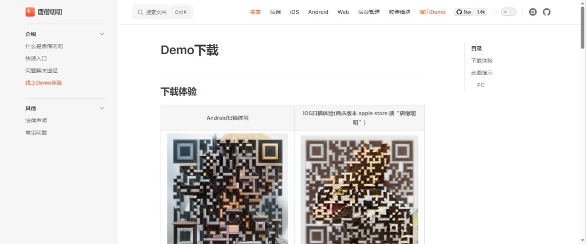
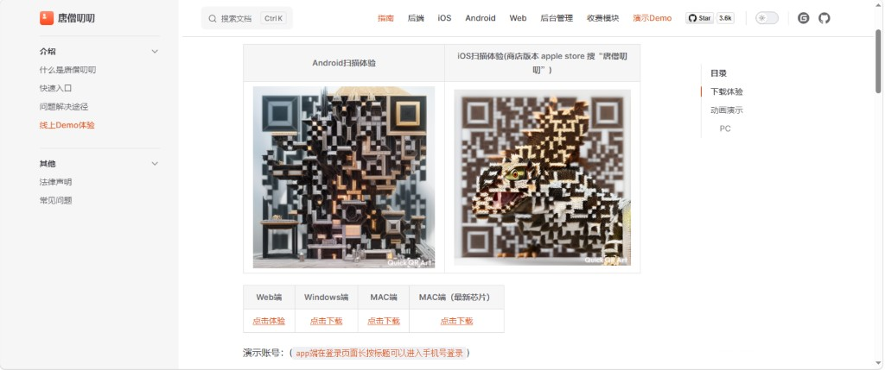
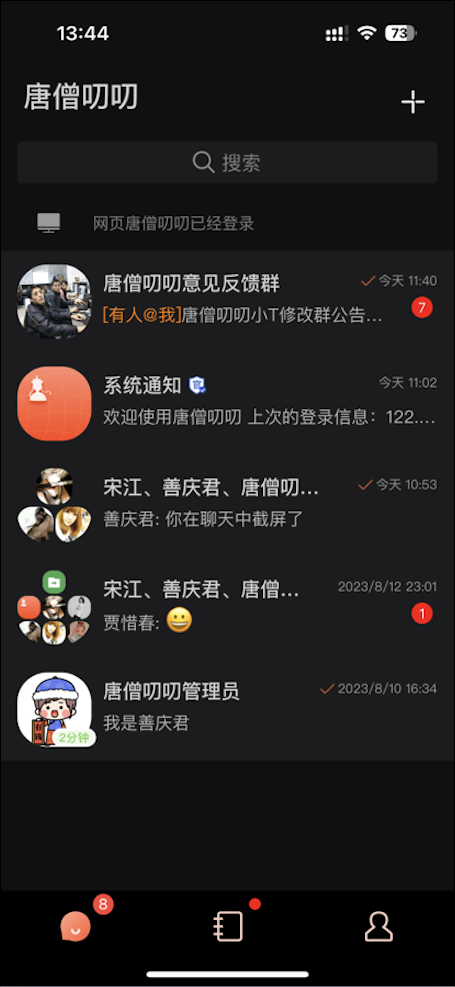
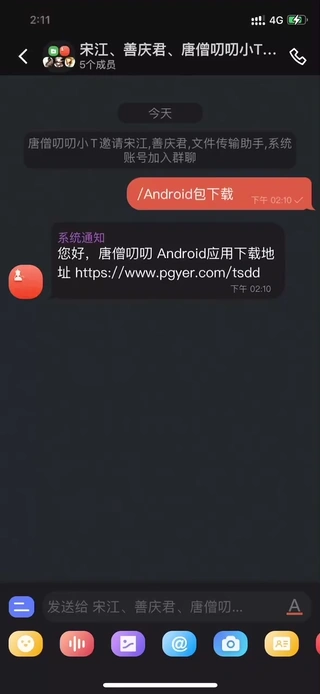
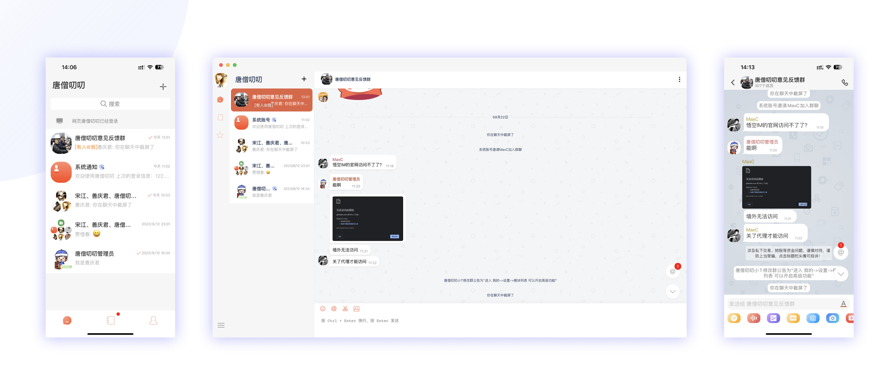
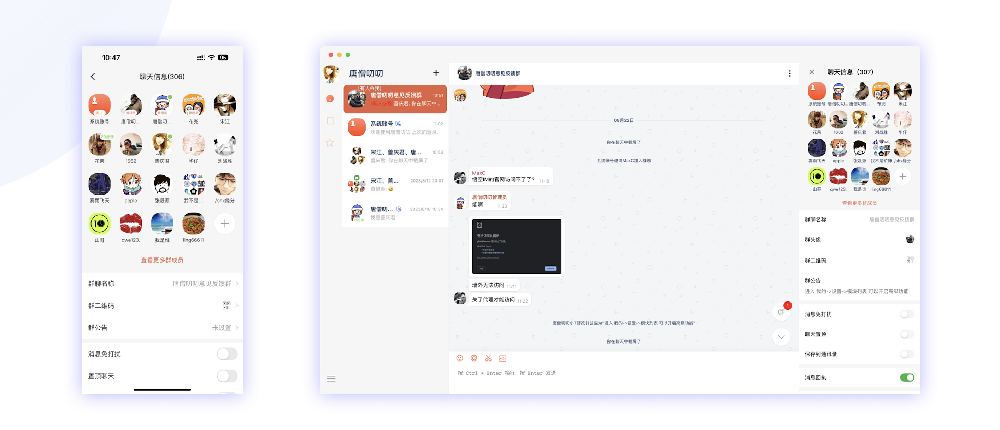
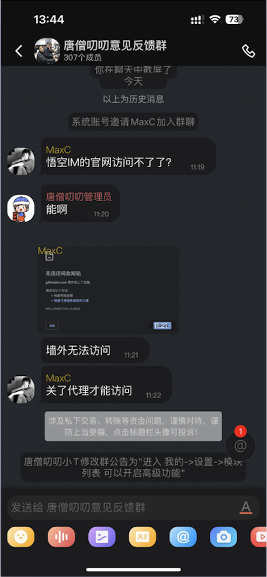
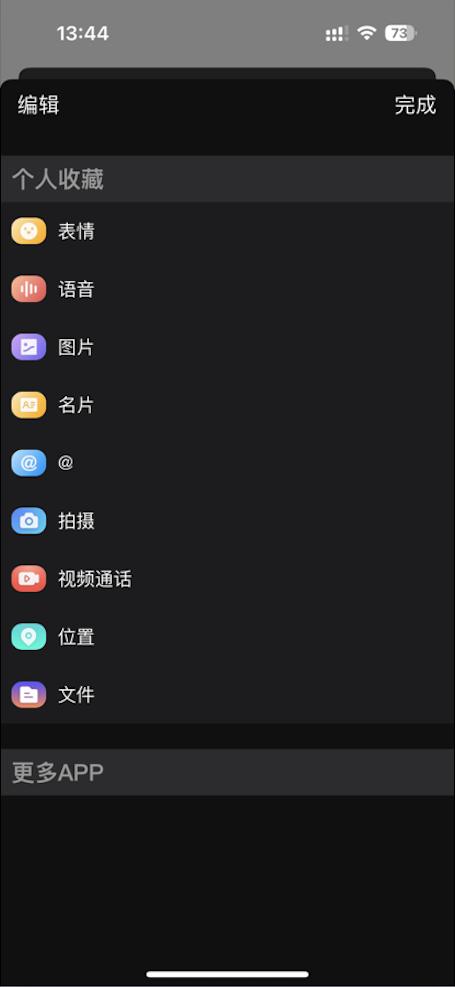
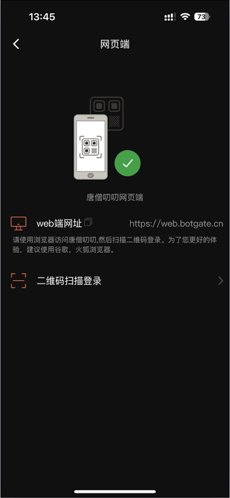

0. 一分钟结论（给业务）
- 这是什么？ 自己搭服务器的聊天软件；数据在自己机器上；手机 / 电脑 / 网页都能自己改、自己打包。
- 日常聊天够不够？ 够。 免费版就有私聊、群聊、加好友、发图发语音等主路径。
- 大概花多少？ 先免费试装。正式要买哪些模块可按官网公开价目粗算量级（常用组合公开标价合计约 2.88w 量级）——这不是最终成交价；明确报价须与官网商务沟通 / 签合同后才能定。
- 最大要注意什么？ 「群成员保护」只明确有禁止群内互加；成员列表一般都能看；资料里可能有短号，抄号再搜加官网没写清会拦住 —— 必须试装确认。
- 和选型报告什么关系？ 本文只讲唐僧叨叨功能；和野火等怎么比，仍看 66 替代调研。
1. 它是什么
唐僧叨叨是一套可自己搭服务器的开源聊天软件（即时通讯 IM）。口号是「让企业轻松拥有自己的即时通讯」。
- 聊天数据放在自己的服务器上，不依赖别人的聊天云。
- 不是「只租账号」的闭源软件：基础免费开源 + 高级功能按模块花钱；买「源码」后可自己改界面、自己打安装包。
- 手机 App、电脑、网页、管理后台都有；底层聊天通道叫 WuKongIM（可商用）。
- 官网 Demo / 商店版只是体验用；正式上线应自建服务器 + 自己打包（安卓自己的安装包；iPhone 仍可用超级签，但包要自己出）。
2. 能干什么（业务视角）
用「业务会不会用到」来读，不讲技术实现：
| 业务场景 | 免费基础版 | 要另买模块时 |
|---|---|---|
| 私聊、加好友 | ✓ 有 | — |
| 建群、群聊、群公告 | ✓ 有 | 禁言 / 管理员 / 禁群内互加 → 买「群高级」 |
| 发文字 / 图 / 语音 / 名片 | ✓ 有 | 发文件 → 买「文件」；小视频另买 |
| 手机 + 电脑一起用 | ✓ 有 | — |
| 不想被随便搜到 | 部分入口在设置里 | 关手机号 / 短号搜索 → 买「安全与隐私」 |
| 通话 | 无（基础） | 买「音视频」（可后置） |
| 朋友圈 / 客服 | 无 | 另买；客服官网标开发中 |
更细的功能点（撤回时长、最多几张图等）见详情版；下面单独说「群成员会不会被挖走」。
3. 群成员资料与互加（业务重点）
白话问题：群友能不能互加、能不能把人的号抄走再搜？
- 能看成员列表吗
- 能。官网写「可查看所有群成员」——这是能展开看全员的意思，不是「可以关掉不让看」的开关。要隐藏成员列表：文档没有现成开关，可能要二开。
- 点进资料能看到什么
- 官方写明：平台短号、群内昵称、入群方式 / 时间、头像昵称等；非好友还可能有「申请加好友」。
- 「禁止群内互加」管什么
- 群高级里有这个开关，管的是群里一键互加。官网没写：开了之后短号会不会藏起来、抄了短号去外面搜索还能不能加上。
- 群外还能怎么找人
- 还能用手机号 / 短号搜索加人；每人可在隐私里关掉「允许被搜」（要买安全与隐私模块）。这和「禁群内互加」是两件事。
业务请记住这两句
① 「可查看所有群成员」≠ 可关掉的隐私项。
② 「禁止群内互加」≠ 已证明「抄号也搜不到」。是否够用，必须试装。
4. 免费 / 收费怎么理解
- 免费
- 日常聊天主路径（文字图语音、好友、基础群）开源可商用
- 两种买法
- 「非源码」公开标价更低，但不好自己深度改包；要自己改名、自己编译安装包，一般谈「源码」档
- 怎么看价钱
- 下表是官网公开价目归档（单位 w ≈ 万元），只作预算量级参考。打折、打包、服务期等须与官网商务沟通后才有明确价格；本文不代替报价单
- 常用组合（测算）
- 文件 + 群高级 + 安全与隐私，按公开源码标价相加约 2.88w 量级——仅测算，非正式成交价。全模块公开合计约 15w 级，多数业务不必一次买全
- 价钱不含
- 服务器、带宽、超级签证书、运维人工 —— 这些另算
定价说明
页面上的模块价与「约几万」均为公开资料归档 + 调研测算。业务拍板、采购立项请以与唐僧叨叨官网商务沟通后的书面报价 / 合同为准。
| 模块 | 白话 | 官网源码标价（归档） | 要不要 |
|---|---|---|---|
| 基础模块 | 日常聊天主路径 | 开源免费 | 必用 |
| 文件 | 发文件给好友 / 群 | 0.8w | 常用则购 |
| 群高级功能 | 禁言、管理员、禁群内互加好友等 | 0.88w | 高相关 |
| 安全与隐私 | 手机号 / 短号搜索保护、设备锁等 | 1.2w | 高相关 |
| 旗舰 | 已读、截屏提醒、点赞等 | 1.8w | 可选增强 |
| 音视频 | 单人 / 群视频通话 | 3.6w | 可后置 |
| 其它 | 收藏、位置、标签、小视频、表情、朋友圈、客服 | 0.2～1.8w | 按需 |
单位 w = 万元量级。来源 tsdaodao.com/price 归档快照；实时价与成交价以官网 / 商务为准。
5. 对我们要的对不对（一眼表）
对照常见业务诉求（含替代 66 场景）。「对得上」指公开文档；「要注意」= 文档有缺口或须试装。
| 我们要的 | 唐僧叨叨 | 业务读法 |
|---|---|---|
| 私聊 / 群聊 / 加好友 | 免费基础有 | 对得上 |
| 自己控制安装包 | 全端可自编译 | 对得上（买源码后） |
| 发文件、强群管理 | 要买模块 | 可计入常用组合测算（公开标价约 2.88w 量级）；成交价待商务 |
| 群里不能互加 | 有「禁止群内互加」开关 | 文档有；效果须试装 |
| 群里不能看成员 / 藏资料 | 无「隐藏成员列表」开关；资料含短号 | 要注意 · 可能不够 / 要二开 |
| 抄短号再搜也加不上 | 官网未写禁互加会连带拦截 | 要注意 · 须试装；可叠加关搜索 |
| 通话 Tab | 音视频模块另买 | 非刚需可后置 |
6. 界面长什么样
先看图建立感觉；也可直接点 在线 Demo 或网页端 web.botgate.cn（演示账号见详情版）。



7. 建议怎么看
- 业务同事：读完第 0～5 节即可；重点看「群成员」红框和「对不对」表。细节表交给详情版或技术同事。
- 要谈费用：先按官网公开价目做预算量级（常用组合测算约 2.88w 级），再联系官网商务要正式报价；另加服务器与超级签成本。
- 下一步（技术）：免费试装 → 重点测第 3 / 5 节的群保护与抄号路径 → 通过后再与商务确认采购清单与价格。
- 和别家比：仍看 66 与其他 IM 竞品调研（野火等）。
模块三级功能清单、完整价目、方案 A～D → 切右上角详情版。
8. 名词解释
- IM
- 即时通讯，就是聊天软件。
- 私有化 / 自建
- 程序装在自己的服务器上，聊天数据自己管，不是租别人的聊天云账号。
- 源码
- 可修改、可自己打包的程序代码。高级模块常分「非源码 / 源码」两档；要自己打安装包一般买源码。
- 超级签
- iPhone 不经正规 App Store、用企业证书侧路安装的方式；证书可能掉签，需要续。
- 平台短号
- 类似「站内号 / 悟空号」一类可搜索的标识；从群进资料页时官网写明会显示。
- 群成员保护
- 业务说法：限制群里互看资料、互加好友，降低被挖用户风险。唐僧叨叨文档对「禁互加」较明确，对「藏成员 / 防抄号」不够明确。
- 试装 / PoC
- 先小范围装起来测：能不能聊、保护够不够，再决定花钱上线。
- w（万）
- 官网价目常用单位，1w ≈ 人民币 1 万元量级；页面数字多为公开标价归档，不是已谈妥的成交价。
快速导读（给业务）
详情版偏清单与价目。若只想快速拍板，可先看右上角简化版；下面五句对齐全文：
- 产品：私有化开源 IM，基础免费，高级按模块买源码；可自编译安卓 / iOS（超级签）。
- 聊天主路径：私聊 / 群聊 / 加好友 / 多端 —— 免费基础已覆盖（第三节）。
- 钱：公开价目可粗算量级（常用组合测算约 2.88w 级）；明确成交价须官网商务沟通 / 合同（第七节）。
- 风险点：「可查看所有群成员」非关项；禁互加有文档；防抄号外搜 / 藏成员列表无明确文档（四附）。
- 本文边界：功能说明 ≠ 已选型上线；横向对比仍看 66 调研。
业务简化版 0～5 节 + 名词解释；细节可跳过表格
商务第四节公开价目归档 + 第七节测算方案；成交价走官网沟通
技术 / 研发四附 PoC 清单 + 第三节能力表 + 试装
一、产品定位
来源：tsdaodao.com、什么是唐僧叨叨。
唐僧叨叨定位为轻量、高性能、重安全、可私有化部署的开源即时通讯系统，面向企业自建聊天能力。官方自称历时多年打磨的运营级开源 IM，通讯动力来自 WuKongIM。
- 开源协议
- Apache 2.0（可商用）；服务端 / App / Web / PC 源码公开
- 部署方式
- 私有化：程序与数据在己方服务器
- 消息能力
- TCP + ACK；离线消息、消息漫游；官方称消息可永久存储
- 安全宣传
- 私有二进制协议、DH + 流式加密（具体强度以实测 / 合同为准）
- 多端
- 支持约 1 个移动端 + 多个 Web / PC 同时在线，消息实时同步
二、源码与覆盖端
唐僧叨叨不是纯闭源 SaaS，而是类开源 + 模块化付费：各端均有完整代码可私有化部署、二次开发、己方编译分发（含超级签 IPA），与无源码、只能拿别人包的路径不同。
- 覆盖端
- 管理后台、PC（Windows / macOS；文档亦提及 Ubuntu）、H5 / Web、Android / iOS App，以及底层 WuKongIM 通讯服务端
- 开源部分
- 基础模块已在 GitHub 开源（Apache 2.0），可免费商用；含私聊 / 群聊主能力所需的核心前后端代码
- 付费部分
- 在开源基础上扩展的高级模块（文件、群管理、隐私、音视频等）需按模块购买；可选「非源码」或「源码」档 —— 买源码后可完全自控编译与改包
- 选型含义
- 形态上接近「全家桶开源 IM」，但高级能力不是全免费；PoC 可先跑免费基础版，确认够用再按需加购模块源码
- 服务端
- 业务端 TangSengDaoDaoServer + 通讯端 WuKongIM
- GitHub
- TangSengDaoDaoServer 等仓库
自建场景：部署服务端 → 编译 / 配置各端客户端 → 安卓发 APK、iOS 可走超级签。商店版 Demo 与自建包不是同一条发布链。
三、基础功能（开源免费）
来源：模块功能详情 · 基础版。基础版本主要包含：文本 / 图片 / 语音 / 名片消息，联系人、用户资料、个人资料、通用设置等。功能以在线演示为准；未逐项实测处标待 PoC。
3.1 会话内消息
| 能力 | 官方说明（摘要） | 对业务 |
|---|---|---|
| 文本消息 | 普通文本；识别链接并显示主页标题；识别手机号可拨号 / 存通讯录；系统 emoji / 自定义 emoji | 核心 ✓ |
| 图片消息 | 相册最多 9 张同时发送、拍摄、原图；发送进度；大图双击缩放；长按转发 / 存相册 | 核心 ✓ |
| 语音消息 | 长按录制松手发送；最长 60 秒；声贝动画；未下载显示进度 | 常用 ✓ |
| 名片消息 | 选择联系人发送 / 查看名片 | 常用 ✓ |
| 正在输入 | 单聊 / 群聊输入提醒；8 秒未发送则取消提醒 | 体验 ✓ |
| 系统消息 | 建群、加人/踢人、改群名、群公告、好友验证打招呼、非好友提醒等 | 常用 ✓ |
| 撤回 | 自己发送 3 分钟内可撤；群主或管理员可永久撤回成员消息 | 常用 ✓ |
| 转发 / 复制 | 单条转发；多选合并 / 逐条转发（最多 100 条）；文本可复制 | 常用 ✓ |
| 历史消息 | 下拉查看；可回到底部；退出后再进停留上次位置 | 常用 ✓ |
| @ / 重发 / 头像 | 长按头像或输入 @；失败消息可重发；点头像看资料 | 体验 ✓ |
| 在线状态 | 群标题显示成员总数及在线人数；单聊显示对方在线 | 体验 ✓ |
3.2 会话列表
| 能力 | 官方说明（摘要） | 对业务 |
|---|---|---|
| 基础信息 | 头像、时间、名称（优先备注）、最后一条预览、按时间排序 | 核心 ✓ |
| 未读 / 免打扰 | 红点；超 100 显示 99+；免打扰灰色提醒；Tab 总未读 | 核心 ✓ |
| 置顶 / 草稿 / @ | 置顶效果；草稿提醒；@ 强提醒 | 常用 ✓ |
| 状态 | 发送状态、已读状态、正在输入；Web/PC 登录显示；网络 / 同步状态 | 体验 ✓ |
| 加号菜单 | 创建群聊、添加好友、扫一扫 | 核心 ✓ |
| 全局搜索 | 搜联系人、群聊、聊天记录 | 常用 ✓ |
| 长按会话 | 开关通知、置顶、删除聊天 | 体验 ✓ |
3.3 会话设置（群 / 单聊）
| 范围 | 官方说明（摘要） | 对业务 |
|---|---|---|
| 群聊设置 | 成员数、前 20 人预览、可展开看全部成员（能力说明，非「禁止查看成员」开关）；群主改名 / 删人；群公告；群备注 / 群内昵称；免打扰、置顶、存通讯录；清空记录；投诉；按成员 / 日期 / 图 / 视频 / 文件查记录；退群（群主退会移交） | 常用 ✓ |
| 单聊设置 | 用户信息、加号建群、查记录、置顶、免打扰、投诉、截屏通知、撤回通知、清空记录 | 常用 ✓ |
| 禁言 / 管理员 / 邀请确认等 | 属群高级（付费）模块 | 见第四节 |
3.4 通讯录
| 能力 | 官方说明（摘要） | 对业务 |
|---|---|---|
| 新朋友 | 申请红点、通过 / 拒绝、设备注；扫一扫、手机通讯录匹配、手机号搜索添加 | 核心 ✓ |
| 保存的群聊 | 已保存群列表、新建群入口 | 常用 ✓ |
| 联系人 | 拼音排序、总数、在线状态、官方 / 机器人标识；长按发消息 / 设备注 | 核心 ✓ |
| 个人名片 | 头像、备注 / 昵称、短号、群内昵称、入群方式与时间、性别；解除好友、拉黑、来源显示 | 常用 ✓ |
3.5 「我的」与设置
| 能力 | 官方说明（摘要） | 对业务 |
|---|---|---|
| 登录用户信息 | 改头像 / 昵称；平台短号仅可改一次；二维码可保存；性别 | 常用 ✓ |
| 新消息通知 | 总开关、通知详情、声音、震动 | 常用 ✓ |
| 通用 | 深色模式、多语言（中 / 英）、字体大小、聊天背景、清缓存、关于 / 检查更新、退出登录 | 体验 ✓ |
官网基础版清单中亦出现「消息收藏」入口；完整「我的收藏」列表能力对应付费收藏模块。部分「截屏通知 / 撤回通知」在旗舰模块亦有强化说明，以演示与合同为准。
四、付费模块说明
价目来源：收费模块（归档口径与 66 调研一致，单位 w = 万元人民币量级）。功能明细来源：price/detail。官方声明：功能以在线演示为准。
定价说明（重要）
下列模块价、合计与后文「方案 A～D」均为官网公开价目归档 + 调研测算，便于估预算量级。不是最终采购价，也不能直接当作「就是两万八」一类成交结论。明确价格须与唐僧叨叨官网商务沟通，并以合同 / 书面报价为准（折扣、打包、服务期可能不同）。
- 基础模块
- 开源免费商用：文本 / 图 / 语音 / 名片、联系人、资料、通用设置 —— PoC 可先只吃这一层
- 非源码合计
- 全部付费模块 7.88w（约 ¥78,800）
- 源码合计
- 全部付费模块 15.76w（约 ¥157,600）；一次性全买优惠 15.5w，送 2 个月技术服务
- 升级
- 一次购买后一年内可索要升级包 / 源码（合同签订起算）
- 技术支持
- 5×8 一对多咨询 ¥2,999 / 月（每月最多 10 人）
采购读法：先用免费基础版验证部署 + 群聊；确认要买的模块清单后再找官网商务询价（公开表仅作量级参考）。音视频公开源码标价 3.6w 最贵，非刚需可后置。
4.1 价目总表（官网公开标价 · 归档）
| 模块 | 简介（官方） | 非源码 | 源码 | 约合（源码） | 业务相关度 |
|---|---|---|---|---|---|
| 基础模块 | 文本 / 图 / 语音 / 名片、联系人、资料、通用设置等 | — | 开源免费商用 | ¥0 | 必用 |
| 收藏 | 收藏文本、图片消息 | 0.1w | 0.2w | ¥2,000 | 可选 |
| 位置 | 选点、发位置、看位置 | 0.3w | 0.6w | ¥6,000 | 弱 |
| 文件 | 发文件给群 / 好友 | 0.4w | 0.8w | ¥8,000 | 常用则购 |
| 标签 | 联系人标签增删改查 | 0.4w | 0.8w | ¥8,000 | 可选 |
| 群高级功能 | 禁言、群管理、群头像、成员邀请机制等 | 0.44w | 0.88w | ¥8,800 | 高 |
| 小视频 | 录制 / 发送 / 播放小视频 | 0.44w | 0.88w | ¥8,800 | 可选 |
| 安全与隐私 | 手机号搜索保护、设备锁、黑名单等 | 0.6w | 1.2w | ¥12,000 | 高 |
| 表情商店 | 自制表情、动图表情 | 0.8w | 1.6w | ¥16,000 | 弱 |
| 朋友圈 | 发 / 看 / 评朋友圈 | 0.8w | 1.6w | ¥16,000 | 非刚需 |
| 客服 | 专属客服、身份标记、自动分配等（官网标开发中） | 0.9w | 1.8w | ¥18,000 | 视业务 |
| 旗舰 | 已读未读、点赞、截屏消息、图片编辑等 | 0.9w | 1.8w | ¥18,000 | 可选增强 |
| 音视频 | 单人视频、群视频 | 1.8w | 3.6w | ¥36,000 | 可后置 |
| 付费合计 | — | 7.88w | 15.76w | 约 ¥157,600 全买优惠 15.5w | — |
4.2 各模块功能详情（官方三级清单摘要）
群高级功能 · 0.88w 源码 · 高相关
- 设置群成员黑名单；群主添加管理员、管理员列表
- 群头像设置；全员禁言开 / 关；邀请确认开 / 关
- 点成员头像：单独禁言及禁言时长
- 禁止群内互加好友开关
- 是否允许新成员查看历史消息；撤回群成员消息
安全与隐私 · 1.2w 源码 · 高相关
- 允许手机号搜索开 / 关；平台短号搜索开 / 关
- 登录密码修改（短信验证码）
- 设备锁：换设备登录需验证手机号；已登录设备列表
- 注销账号（短信验证；注销后信息销毁）
- 黑名单列表：拉入 / 拉出
「禁止群内互加」与资料是否仍露出短号、能否抄号外搜，详见 四附；完整是否满足业务仍待 PoC。
文件 · 0.8w 源码 · 常用则购
- 面板增加文件入口；文件消息 UI（格式 / 大小 / 名称）
- 上传 / 下载、预览、转发
旗舰 · 1.8w 源码 · 可选增强
- 消息已读未读标记、已读成员列表、开关
- 截屏消息：拦截截屏并发送截屏消息
- 消息编辑与编辑状态显示；消息点赞 / 点赞列表
- 图片编辑：涂鸦、裁剪、加文字、滤镜
- 按日期 / 成员 / 图片 / 关键字查历史
- 会话设置：截屏通知、撤回通知
音视频 · 3.6w 源码 · 可后置
- 拨打入口、消息 UI、拨打 / 接听 / 接通后 UI
- 会议模式音视频
收藏 · 0.2w 源码
- 会话内收藏文本 / 图片
- 我的收藏列表（图片、文本、时间、作者）；删除、发给朋友、复制、图片缩放
小视频 · 0.88w 源码
- 录制约 15 秒或选相册视频；播放、显示大小、存本地、下载进度、转发
位置 · 0.6w 源码
- 面板位置入口；发当前位置 / 搜索位置；查看对方位置与截图
标签 · 0.8w 源码
- 选联系人新建标签；列表、添加、删除、修改
表情商店 · 1.6w 源码
- 聊天面板表情入口、emoji / 收藏分类、搜索
- 自制表情（相册选图）、整理排序 / 删除
- 平台表情商店：添加一组、详情、我的表情管理
朋友圈 · 1.6w 源码 · 非刚需
- 发图 / 视频 / 文本；位置；提醒某人；可见范围（公开 / 私有 / 部分可见 / 不给谁看）
- 图片最多 9 张可排序；视频限 1 个；上传进度
- 列表：封面、点赞评论、大图转发 / 收藏、新消息入口等
客服 · 1.8w 源码 · 官网标注「开发中」
- 通讯录专属客服入口；客服 / 访客身份标记
- 访客消息自动匹配客服；欢迎词；访客资料详情
四附、群成员资料与「禁互加」边界
针对业务常见诉求：「群里最好限制互看资料、互加好友；即使不能互加，会不会记下 ID / 短号再去搜索加人」。以下按官网公开页归纳；来源：模块功能详情、管理后台 · 群管理、API 字段 forbidden_add_friend。
已明确（官网有写）
| 点 | 官方说明 | 含义 |
|---|---|---|
| 查看群成员 | 群聊设置原文：「默认显示前20位群成员」「可查看所有群成员」；点消息 / 成员头像可查看用户资料 | 这是界面能力说明（可展开看全员），不是可关闭的隐私开关。文档无「禁止查看群成员列表」项；要隐藏成员列表 → 待 PoC / 可能二开 |
| 从群进入的资料字段 | 个人名片：显示用户平台短号；从群内进入显示群内昵称、入群方式及入群时间、性别等；非好友显示「申请加好友」 | 资料含可用于识别的短号，不只是昵称头像 |
| 禁止群内互加 | 群管理模块：禁止群内互加好友开关；API：forbidden_add_friend（是否群内禁止加好友） |
明确存在「挡群内互加」能力 |
| 群外搜索加人 | 可通过手机号搜索用户添加；安全与隐私可开 / 关「允许手机号搜索」「允许平台短号搜索」 | 搜索加人是另一套开关，文档未写与禁互加自动联动 |
| 管理后台（运营侧） | 群成员列表可查看：用户昵称、用户 ID、头像、成员角色、群内备注、入群时间 | 后台可见内部用户 ID；不等于 C 端群友一定能看到同一字段 |
未写清（不能当已确认结论）
文档空白 · 须 PoC
- 「可查看所有群成员」不要读成开关：与「开启/关闭全员禁言」「禁止群内互加好友」等写法不同，官网未提供「关闭后普通成员不能看成员列表」的配置说明。
- 开启「禁止群内互加好友」后，官网没有正面说明是否同时：隐藏资料页短号 / 内部 ID、去掉「申请加好友」按钮、拦截「抄短号 → 添加好友全局搜索再加」。因此不能写成「禁互加 = 群成员信息不可被记录、不可再搜到」。
| 能力 | 文档是否清楚 | 业务读法 |
|---|---|---|
| 成员列表可看全员 | 有（能力描述） | 默认可见；无官方「关闭查看」开关 |
| 禁止群内互加 | 有（明确开关） | 多半挡群内资料页一键加好友 |
| 资料是否仍露出短号 | 有「会显示短号」；无「禁互加后隐藏」 | 信息仍可能被抄走 · 待 PoC |
| 用短号 / 手机号全局搜索再加 | 有搜索能力；无写与禁互加联动 | 旁路加人是否通 · 待 PoC |
| C 端是否暴露后台同款「用户 ID」 | 未写 | 待 PoC；已知明确露出的标识是平台短号 |
建议 PoC 清单（针对本块）
- 普通成员打开群设置：是否始终能展开「全部成员」（确认无隐藏列表开关）。
- 开启「禁止群内互加」后，点群友资料：短号是否还显示、「申请加好友」是否还在。
- 记下短号，走「添加好友 → 短号搜索」能否加上。
- 对方关闭「允许短号搜索 / 手机号搜索」后，上述路径是否失败。
- C 端群友资料是否出现与管理后台一致的内部用户 ID（或仅短号）。
若业务强依赖「隐藏群成员 / 禁互加挡不住抄号外搜」，需叠加：默认关短号 / 手机号搜索、二开隐藏成员列表或资料字段，或评估其它方案。
五、界面截图
截图来自既有调研归档（官方 Demo CDN 原图本地化），点击可放大。
会话列表与群聊
会话列表（搜索 / + / 未读）、群聊（表情 / 语音条）；信息架构接近日常 IM。
机器人与扩展
官方 Demo 含机器人对话及其它扩展能力示意。

PC / 多端
手机与桌面并列、群聊与群资料侧栏。


深色模式
深色会话 / 群聊 / 收藏 / Web 登录。



1 / 4 · 会话 / 群聊
六、体验入口
- Android
- Demo 页扫码
- iOS
- App Store 搜「唐僧叨叨」（商店体验版）；自建仍建议自编译 IPA → 超级签，不依赖商店审核版
- Windows
- TangSengDaoDao-latest.exe
演示账号
App 登录页长按标题可进入手机号登录。
| 账号 | 密码 |
|---|---|
| 15900000002 | a1234567 |
| 15900000003 | a1234567 |
| 15900000004 | a1234567 |
| 15900000005 | a1234567 |
| 15900000006 | a1234567 |
七、费用与采购方案（调研测算 · 非成交价）
以下按「私聊 / 群聊 / 加好友 + 己方编译分发」归纳，模块按官网「源码」公开标价相加，仅作预算量级与采购组合建议。非官方报价单、非最终成交价；具体金额、折扣、交付与服务期须与官网商务沟通后以合同为准。
7.1 业务诉求 → 模块映射
| 业务诉求 | 建议模块 | 官网源码标价（归档） |
|---|---|---|
| 私聊、加好友、消息可靠 | 基础模块（开源） | ¥0 |
| 建群、群运营（禁言 / 管理 / 邀请机制） | 群高级功能 | 0.88w |
| 运营发图 / 发文件 | 文件 | 0.8w |
| 群成员保护（限制互加等，待 PoC） | 群高级禁互加 + 安全与隐私（搜号开关）；资料仍可能露短号，抄号外搜未写清 | 1.2w + 已含群高级 |
| 通话 Tab（非硬性） | 音视频（可选后置） | 3.6w |
| 朋友圈 / 客服 / 位置等 | 暂不纳入 | — |
7.2 分档方案
| 方案 | 包含模块（源码档 · 测算） | 适用 | 公开标价合计（测算） |
|---|---|---|---|
| A · PoC 验证 | 基础模块 | 先验证超级签 + 私聊 / 群聊；零 license 公开成本 | ¥0（开源） |
| B · 常用上线组合（测算主选） | 基础 + 文件 + 群高级 + 安全与隐私 | 覆盖主路径 + 常见运营；群保护能力须 PoC 确认 | 约 2.88w 量级 0.8 + 0.88 + 1.2 = 2.88w（公开标价相加） 成交价待商务确认 |
| C · 增强版（测算） | 方案 B + 旗舰（已读 / 截屏通知等） | 偏「企业感」体验；仍非硬性要求 | 约 4.68w 量级 2.88 + 1.8 = 4.68w；成交价待商务 |
| D · 含音视频（测算） | 方案 B + 音视频 | 要对标「通话」Tab 时考虑；否则后置 | 约 6.48w 量级 2.88 + 3.6 = 6.48w；成交价待商务 |
- 调研建议
- 优先走方案 A → B：免费 PoC 通过后，按方案 B 模块清单向官网商务询价；公开标价相加约 2.88w 量级，仅作预算参考
- 明确价格怎么来
- 打开官网「商务联系」或文档商务入口沟通：要哪些模块、要源码还是非源码、要不要技术支持 —— 以对方书面报价 / 合同为准
- 可选服务（公开标价）
- 5×8 技术支持公开标价约 ¥2,999 / 月（是否购买、能否议价以商务为准）
- 不含
- 服务器 / 带宽 / 超级签证书 / 运维人力；全模块公开打包约 15.5w 对多数业务明显过剩，不建议未询价就按全买立项
- 待验证
- 「群成员保护」——须按 四附 PoC 清单 实测：禁互加后短号是否仍显示、抄短号全局搜索能否再加
66 调研中的对应测算见 唐僧叨叨报价章节，口径同样为调研测算，非正式成交价。
八、与业务诉求对照
| 业务常见诉求 | 唐僧叨叨对应 | 状态 |
|---|---|---|
| 私聊、加好友、消息可靠 | 基础模块 | 公开能力齐全；待 PoC |
| 建群、群运营 | 基础群 + 群高级模块 | 禁言 / 管理员等需购模块 |
| 发图 / 发文件 | 基础含图；文件需模块 | 按需购 |
| 群成员保护（限制互看 / 互加） | 「可查看所有群成员」= 能力说明非关项；有「禁止群内互加」+ 搜号隐私开关；资料含短号；抄号外搜 / 隐藏成员列表见 四附 | 待 PoC（禁互加有文档；隐藏成员列表 / 防抄号外搜无明确文档） |
| 自己控制安装包 | 全端源码可自编译 | 适合超级签 / 自托管 APK |
| 通话 | 音视频模块 | 可后置 |
说明
本文是功能说明，方便业务理解产品能力；不等于已完成上线决策。选型对比、与其它 IM 的取舍，请仍看 66 与其他 IM 竞品调研。